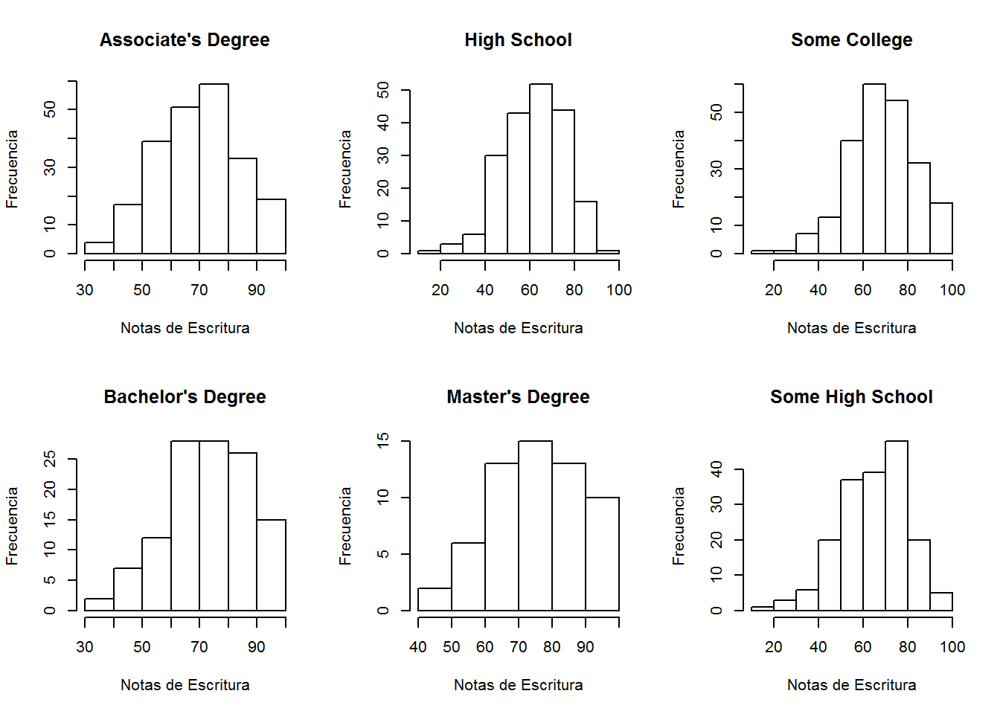
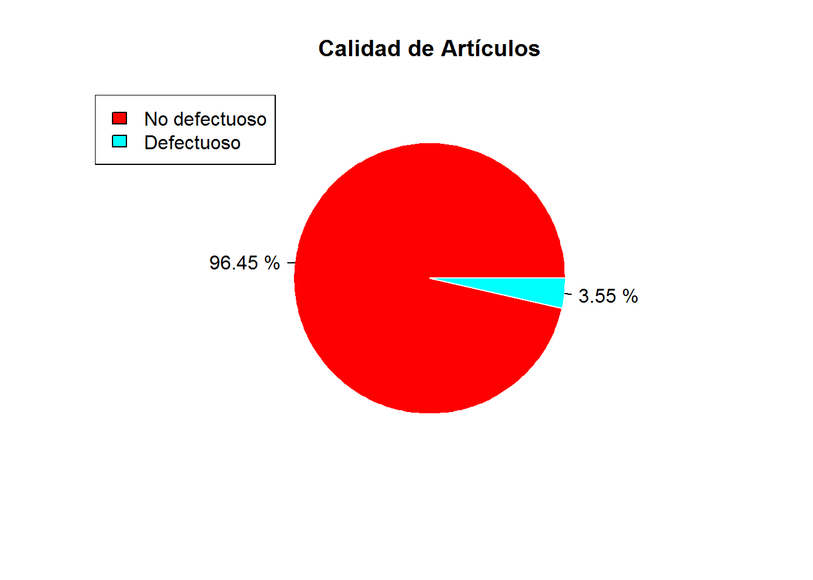
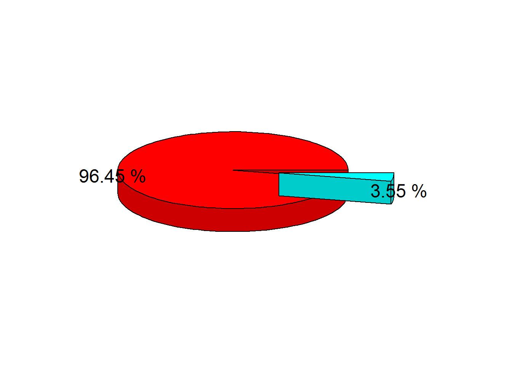
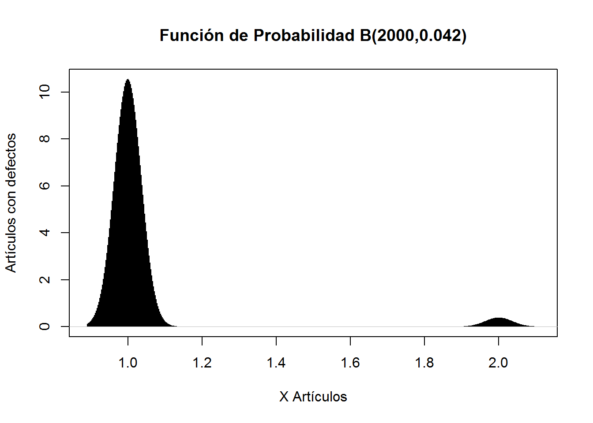

Lenguaje R
Análisis Exploratorio de Datos con lenguaje R
El objetivo es realizar un análisis exploratorio de datos (EDA) a una base de datos e identificar la posible normalidad de los datos registrados.
La base de datos que se utiliza está disponible en https://www.kaggle.com/spscientist/students-performance-in-exams (debes registrarte para descargar). Dicha base de datos se encuentra alojada en el archivo StudentsPerformance.csv e incluye las notas de tres exámenes (matemática, lectura y escritura) para un grupo de estudiantes. Adicionalmente, se proporciona información demográfica de los estudiantes y sus padres, así como sobre su desempeño escolar.
A partir de la base de datos y el análisis exploratorio de datos se hace énfasis en entender las diferencias descriptivas y la relación entre variables dividiendo la base de datos por el nivel de educación de los padres. Es decir, se ejecuta un análisis descriptivo tanto de las notas de los exámenes, como de las demás variables de las bases de datos, separando por el nivel de educación de los padres.
Preparativos
Para realizar los cálculos y mostrar las diversas gráficas se requieren de diversos paquetes con los que cuenta el lenguaje R para estas tareas. El paquete “ggplot2” es un potente paquete de graficación y visualización de datos. El paquete “corrplot” es requerido para el cálculo y la graficación de la matriz de correlación de un conjunto de datos. El paquete “plyr” es requerido para la manipulación de datos y subconjunntos de los mismo. Por último El paquete “plotrix” es requerido para la graficación de diagramas de torta en 3D.
install.packages("ggplot2")
install.packages("corrplot")
install.packages("plyr")
install.packages("plotrix")Carga y reorganización de datos
A través de los siguientes comandos cargamos los datos del archivo StudentsPerformance.csv al data frame “datos”, renombramos la columnas del data frame para facilitar lectura y escritura de código y separamos nuestra base de datos de acuerdo al nivel de educación de los padres en 6 conjuntos.
datos<-read.csv("StudentsPerformance.csv")
colnames(datos)<-c("gender","race","education", "lunch", "testprep", "math","reading", "writing")
datos1 <- datos[datos$education=="associate's degree",]
datos2 <- datos[datos$education=="bachelor's degree",]
datos3 <- datos[datos$education=="high school",]
datos4 <- datos[datos$education=="master's degree",]
datos5 <- datos[datos$education=="some college",]
datos6 <- datos[datos$education=="some high school",]Resumen y visualización de la composición los datos
A continuación se muestran algunos comandos que nos ayudan a entender la composición de nuestra base de datos. Con los comandos head y tails nos permiten ver las primeras y últimas 6 filas del data frame “datos”. El comando names observamos los nombres de las columnas de la matriz. El comando str lista el conjunto de variables que se encuentran en la base datos junto a algunos datos particulares que destacan el número y naturaleza de las variables. Por último, el comando summary vendría a ser el más útil y nos ofrece un resumen de las variables tanto numéricas como no numéricas, sus frecuencias, cantidad, media, mediana y valores máximos y mínimos.
head(datos)## gender race education lunch testprep math reading
## 1 female group B bachelor's degree standard none 72 72
## 2 female group C some college standard completed 69 90
## 3 female group B master's degree standard none 90 95
## 4 male group A associate's degree free/reduced none 47 57
## 5 male group C some college standard none 76 78
## 6 female group B associate's degree standard none 71 83
## writing
## 1 74
## 2 88
## 3 93
## 4 44
## 5 75
## 6 78tail(datos)## gender race education lunch testprep math reading
## 995 male group A high school standard none 63 63
## 996 female group E master's degree standard completed 88 99
## 997 male group C high school free/reduced none 62 55
## 998 female group C high school free/reduced completed 59 71
## 999 female group D some college standard completed 68 78
## 1000 female group D some college free/reduced none 77 86
## writing
## 995 62
## 996 95
## 997 55
## 998 65
## 999 77
## 1000 86names(datos)## [1] "gender" "race" "education" "lunch" "testprep" "math"
## [7] "reading" "writing"str(datos)## 'data.frame': 1000 obs. of 8 variables:
## $ gender : Factor w/ 2 levels "female","male": 1 1 1 2 2 1 1 2 2 1 ...
## $ race : Factor w/ 5 levels "group A","group B",..: 2 3 2 1 3 2 2 2 4 2 ...
## $ education: Factor w/ 6 levels "associate's degree",..: 2 5 4 1 5 1 5 5 3 3 ...
## $ lunch : Factor w/ 2 levels "free/reduced",..: 2 2 2 1 2 2 2 1 1 1 ...
## $ testprep : Factor w/ 2 levels "completed","none": 2 1 2 2 2 2 1 2 1 2 ...
## $ math : int 72 69 90 47 76 71 88 40 64 38 ...
## $ reading : int 72 90 95 57 78 83 95 43 64 60 ...
## $ writing : int 74 88 93 44 75 78 92 39 67 50 ...summary(datos)## gender race education lunch
## female:518 group A: 89 associate's degree:222 free/reduced:355
## male :482 group B:190 bachelor's degree :118 standard :645
## group C:319 high school :196
## group D:262 master's degree : 59
## group E:140 some college :226
## some high school :179
## testprep math reading writing
## completed:358 Min. : 0.00 Min. : 17.00 Min. : 10.00
## none :642 1st Qu.: 57.00 1st Qu.: 59.00 1st Qu.: 57.75
## Median : 66.00 Median : 70.00 Median : 69.00
## Mean : 66.09 Mean : 69.17 Mean : 68.05
## 3rd Qu.: 77.00 3rd Qu.: 79.00 3rd Qu.: 79.00
## Max. :100.00 Max. :100.00 Max. :100.00Análisis descriptivo de los datos
Medidas de tendencia central por nivel de educación de los padres
summary(datos1) ## gender race education lunch
## female:116 group A:14 associate's degree:222 free/reduced: 77
## male :106 group B:41 bachelor's degree : 0 standard :145
## group C:78 high school : 0
## group D:50 master's degree : 0
## group E:39 some college : 0
## some high school : 0
## testprep math reading writing
## completed: 82 Min. : 26.00 Min. : 31.00 Min. : 35.0
## none :140 1st Qu.: 57.00 1st Qu.: 61.00 1st Qu.: 58.0
## Median : 67.00 Median : 72.50 Median : 70.5
## Mean : 67.88 Mean : 70.93 Mean : 69.9
## 3rd Qu.: 80.00 3rd Qu.: 81.00 3rd Qu.: 80.0
## Max. :100.00 Max. :100.00 Max. :100.0summary(datos2)## gender race education lunch
## female:63 group A:12 associate's degree: 0 free/reduced:44
## male :55 group B:20 bachelor's degree :118 standard :74
## group C:40 high school : 0
## group D:28 master's degree : 0
## group E:18 some college : 0
## some high school : 0
## testprep math reading writing
## completed:46 Min. : 29.00 Min. : 41.00 Min. : 38.00
## none :72 1st Qu.: 61.00 1st Qu.: 63.00 1st Qu.: 62.50
## Median : 68.00 Median : 73.00 Median : 74.00
## Mean : 69.39 Mean : 73.00 Mean : 73.38
## 3rd Qu.: 79.00 3rd Qu.: 82.75 3rd Qu.: 83.00
## Max. :100.00 Max. :100.00 Max. :100.00summary(datos3)## gender race education lunch
## female: 94 group A:18 associate's degree: 0 free/reduced: 70
## male :102 group B:48 bachelor's degree : 0 standard :126
## group C:64 high school :196
## group D:44 master's degree : 0
## group E:22 some college : 0
## some high school : 0
## testprep math reading writing
## completed: 56 Min. : 8.00 Min. :24.00 Min. : 15.00
## none :140 1st Qu.:53.75 1st Qu.:54.00 1st Qu.: 52.00
## Median :63.00 Median :66.00 Median : 64.00
## Mean :62.14 Mean :64.70 Mean : 62.45
## 3rd Qu.:72.00 3rd Qu.:74.25 3rd Qu.: 73.00
## Max. :99.00 Max. :99.00 Max. :100.00summary(datos4)## gender race education lunch
## female:36 group A: 3 associate's degree: 0 free/reduced:24
## male :23 group B: 6 bachelor's degree : 0 standard :35
## group C:19 high school : 0
## group D:23 master's degree :59
## group E: 8 some college : 0
## some high school : 0
## testprep math reading writing
## completed:20 Min. :40.00 Min. : 42.00 Min. : 46.00
## none :39 1st Qu.:55.50 1st Qu.: 65.50 1st Qu.: 67.00
## Median :73.00 Median : 76.00 Median : 75.00
## Mean :69.75 Mean : 75.37 Mean : 75.68
## 3rd Qu.:81.00 3rd Qu.: 84.50 3rd Qu.: 85.00
## Max. :95.00 Max. :100.00 Max. :100.00summary(datos5)## gender race education lunch
## female:118 group A:18 associate's degree: 0 free/reduced: 79
## male :108 group B:37 bachelor's degree : 0 standard :147
## group C:69 high school : 0
## group D:67 master's degree : 0
## group E:35 some college :226
## some high school : 0
## testprep math reading writing
## completed: 77 Min. : 19.00 Min. : 23.00 Min. :19.00
## none :149 1st Qu.: 59.00 1st Qu.: 60.00 1st Qu.:60.00
## Median : 67.50 Median : 70.50 Median :70.00
## Mean : 67.13 Mean : 69.46 Mean :68.84
## 3rd Qu.: 76.00 3rd Qu.: 79.75 3rd Qu.:79.00
## Max. :100.00 Max. :100.00 Max. :99.00summary(datos6)## gender race education lunch
## female:91 group A:24 associate's degree: 0 free/reduced: 61
## male :88 group B:38 bachelor's degree : 0 standard :118
## group C:49 high school : 0
## group D:50 master's degree : 0
## group E:18 some college : 0
## some high school :179
## testprep math reading writing
## completed: 77 Min. : 0.0 Min. : 17.00 Min. : 10.00
## none :102 1st Qu.:53.0 1st Qu.: 56.50 1st Qu.: 54.00
## Median :65.0 Median : 67.00 Median : 66.00
## Mean :63.5 Mean : 66.94 Mean : 64.89
## 3rd Qu.:74.0 3rd Qu.: 79.00 3rd Qu.: 77.00
## Max. :97.0 Max. :100.00 Max. :100.00Observaciones de las medidas de tendencia central
Analizando las medidas de tendencia central se encuentra que en todas las asignaturas la media y mediana más alta de todos los grupos separados por educación de los padres son las del grupo de los estudiantes que tienen padres con nivel de educación “master’s degree”. Por otra parte, la media y mediana más baja, particularmente en la asignatura de matemáticas es la del grupo con padres que tienen nivel de educación “asoociate’s degree”. En las asignaturas de lectura y escritura, la media y mediana más baja es la del grupo con padres que tienen nivel de educación “high school”.
Observaciones de las medidas de tendencia no central o análisis de cuartiles
Analizando las medidas de tendencia no central se encuentra que el grupo de estudiantes con padres que tienen nivel educativo “associate’s degree” aproximadamente el 75% de los estudiantes posee notas por encima de 57 en todas las asignaturas, aproximadamente el 50% por encima de 67 y aproximadamente el 25% por encima de 80.En el grupo de los estudiantes con padres que tienen “bachelor’s degree” aproximadamente el 75% de los estudiantes posee notas por encima de 61 en todas las asignaturas, aproximadamente el 50% por encima de 68 y aproximadamente el 25% por encima de 79. En el grupo de los estudiantes con padres que tienen “high school” aproximadamente el 75% de los estudiantes posee notas por encima de 52 en todas las asignaturas, aproximadamente el 50% por encima de 63 y aproximadamente el 25% por encima de 72. En el grupo de los estudiantes con padres que tienen “master’s degree” aproximadamente el 75% de los estudiantes posee notas por encima de 55 en todas las asignaturas, aproximadamente el 50% por encima de 73 y aproximadamente el 25% por encima de 81. En el grupo de los estudiantes con padres que tienen “some college” aproximadamente el 75% de los estudiantes posee notas por encima de 59 en todas las asignaturas, aproximadamente el 50% por encima de 67.5 y aproximadamente el 25% por encima de 76. En el grupo de los estudiantes con padres que tienen “some high school” aproximadamente el 75% de los estudiantes posee notas por encima de 54 en todas las asignaturas, aproximadamente el 50% por encima de 65 y aproximadamente el 25% por encima de 74.
Observaciones de las medidas de desviación de las variables numéricas de acuerdo al nivel de educación de los padres
Para este apartado usamosel comando sd para calcular la desviación estándar y se lo aplicamos solamente a las columnas de 6 a la 8 que contienene las notas de las asignaturas a cada uno de las base de datos separadas por eduación de los padres (datos1, datos2,…). El procedimiento que se usa es el siguiente: se contruye un vector por cada grupo de estudiantes separados por nivel de educación de los padres, el vector se compone de la desviación estándar de cada columna que corresponde a las notas de las asignaturas matemáticas, lectura y escritura, luego se contruye un data frame para mostrar toda la información de manera organizada
sd1=c(sd(datos1[,6]),sd(datos1[,7]),sd(datos1[,8]))
sd2=c(sd(datos2[,6]),sd(datos2[,7]),sd(datos2[,8]))
sd3=c(sd(datos3[,6]),sd(datos3[,7]),sd(datos3[,8]))
sd4=c(sd(datos4[,6]),sd(datos4[,7]),sd(datos4[,8]))
sd5=c(sd(datos5[,6]),sd(datos5[,7]),sd(datos5[,8]))
sd6=c(sd(datos6[,6]),sd(datos6[,7]),sd(datos6[,8]))
notas=c("Notas de matemática", "Notas de Lectura", "Notas de escritura")
datosd= data.frame(notas,sd1,sd2,sd3,sd4,sd5,sd6)
colnames(datosd)=c(" "," SDAD "," SDBD ", " SDHS ", " SDMD ", " SDSC ", " SDSH ")
datosd## SDAD SDBD SDHS SDMD SDSC
## 1 Notas de matemática 15.11209 14.94379 14.53965 15.15392 14.31290
## 2 Notas de Lectura 13.86895 14.28525 14.13213 13.77516 14.05705
## 3 Notas de escritura 14.31112 14.72826 14.08591 13.73071 15.01233
## SDSH
## 1 15.92799
## 2 15.47929
## 3 15.73620#SD: Desviación Estándar
#SDAD: SD Associate's Degree
#SDBD: SD Bachelor's Degree
#SDHS: SD High School
#SDMD: SD Master's Degree
#SDSC: SD Some College
#SDSH: SD Some High SchoolCon respecto a las medidas de desviación de los grupos separados por el nivel educativo de los padres se puede decir que el grupo con notas más alejadas de la media en todas las asignaturas es el de los estudiantes con padres que tienen nivel educativo some high school, y el grupo con notas que menos se alejan de la media en matemáticas es el grupo de estudiantes con padres que tienen educación some college y los que tienen notas que menos se alejan de la media en las asignaturas de lectura y escritura es el grupo de estudiantes con padres que tienen master’s degree .
Análisis Gráfico
Matriz de dispersión
En este apartado mostraremos la matriz de dispersión de los datos a través del comando pairs, la matriz de dispersión muestra gráficamente el grado de correlación entre las variables, por medio de la diagonal y las columnas podemos encontrar el diagrama de dispersión que corresponde para cada par de variables. Se aplica este comando a cada base de datos separada de acuerdo al nivel de educación de los padres.
pairs(datos1, main="MDD Associate's Degree") pairs(datos2, main="MDD Bachelor's Degree") 
pairs(datos3, main="MDD High School") pairs(datos4, main="MDD Master's Degree") 
pairs(datos5, main="MDD Some College") 
pairs(datos6, main="MDD Some High School") Observaciones de la matriz de dispersión
El patrón que se percibe en todos los grupos según el nivel de educación en la matriz de dispersión es una fuerte correlacion positiva entre las notas de lectura y escritura y también entre matematicas y demás asignaturas. Lo que implica que a mejores notas en lectura los estudiantes sacan mejores notas en escritura y viceversa. Tambien se puede decir que si los estudiantes sacan mejores notas en matemáticas sacan mejores en lectura y escritura, sin embargo esta última relación se ve mucho más débil que en el caso exclusivo de lectura y escritura.
Diagramas de dispersión de todas las asignaturas de acuerdo al nivel de educación de los padres
A traves de las siguientes instrucciones consolidamos sólo para las variables numéricas (notas de matemáticas, lectura y escritura) y en 3 gráficos en lugar de 18 los diagramos de dispersión de acuerdo al nivel de educacion de los padres que están identificados por colores usando el paquete ggplot2.
mdd1=ggplot(datos, aes(math,reading, color=education)) +geom_point() + stat_smooth(method = "loess", formula = y ~ x)+ labs(title="Diagrama de Dispersión Notas de Matemáticas vs Notas de Lectura")+ labs(x="Notas de Matemática", y="Notas de Lectura")
mdd1
mdd2=ggplot(datos, aes(reading,writing, color=education)) +geom_point() + stat_smooth(method = "loess", formula = y ~ x) + labs(title="Diagrama de Dispersión Notas de Lectura vs Notas de Escritura")+ labs(x="Notas de Lectura", y="Notas de Escritura")
mdd2mdd3=ggplot(datos, aes(math,writing, color=education)) +geom_point() + stat_smooth(method = "loess", formula = y ~ x) + labs(title="Diagrama de Dispersión Notas de Matemática vs Notas de Escritura")+ labs(x="Notas de Lectura", y="Notas de Escritura")
mdd3
Histogramas
Usando el comando hist podemos obtener los diferentes histogramas de las notas por cada asignatura de acuerdo al nivel de educación de los padres. Mostraremos 6 histogramas por pantalla usando el comando layout que organiza nuestra ventana de visualización en 6 secciones.
layout(matrix(c(1:6), nrow=2, byrow=FALSE))
hist(datos1$math, main="Associate's Degree", xlab="Notas de Matemáticas", ylab="Frecuencia")
hist(datos2$math, main="Bachelor's Degree", xlab="Notas de Matemáticas", ylab="Frecuencia")
hist(datos3$math, main="High School", xlab="Notas de Matemáticas", ylab="Frecuencia")
hist(datos4$math, main="Master's Degree", xlab="Notas de Matemáticas", ylab="Frecuencia")
hist(datos5$math, main="Some College", xlab="Notas de Matemáticas", ylab="Frecuencia")
hist(datos6$math, main="Some High School", xlab="Notas de Matemáticas", ylab="Frecuencia")
layout(matrix(c(1:6), nrow=2, byrow=FALSE))
hist(datos1$reading, main="Associate's Degree", xlab="Notas de Lectura", ylab="Frecuencia")
hist(datos2$reading, main="Bachelor's Degree", xlab="Notas de Lectura", ylab="Frecuencia")
hist(datos3$reading, main="High School", xlab="Notas de Lectura", ylab="Frecuencia")
hist(datos4$reading, main="Master's Degree", xlab="Notas de Lectura", ylab="Frecuencia")
hist(datos5$reading, main="Some College", xlab="Notas de Lectura", ylab="Frecuencia")
hist(datos6$reading, main="Some High School", xlab="Notas de Lectura", ylab="Frecuencia")
layout(matrix(c(1:6), nrow=2, byrow=FALSE))
hist(datos1$writing, main="Associate's Degree", xlab="Notas de Escritura", ylab="Frecuencia")
hist(datos2$writing, main="Bachelor's Degree", xlab="Notas de Escritura", ylab="Frecuencia")
hist(datos3$writing, main="High School", xlab="Notas de Escritura", ylab="Frecuencia")
hist(datos4$writing, main="Master's Degree", xlab="Notas de Escritura", ylab="Frecuencia")
hist(datos5$writing, main="Some College", xlab="Notas de Escritura", ylab="Frecuencia")
hist(datos6$writing, main="Some High School", xlab="Notas de Escritura", ylab="Frecuencia")
Si usamos el paquete ggplot2 podemos simplificar las instrucciones y mostrar en un sólo gráfico todos los histogramas de acuerdo al nivel de educación de los padres en 3 gráficos que corresponden a cada asignatura.
hist1=ggplot(data=datos, aes(math)) + geom_histogram(binwidth=5, color="gray", aes(fill=education))+ labs(title="Notas de Matemáticas vs Educación de Padres")+ labs(x="Notas de Matemática", y="Frecuencia")
hist1
hist2=ggplot(data=datos, aes(reading)) + geom_histogram(binwidth=5, color="gray", aes(fill=education))+ labs(title="Notas de Lectura vs Educación de Padres")+ labs(x="Notas de Lectura", y="Frecuencia")
hist2hist3=ggplot(data=datos, aes(writing)) + geom_histogram(binwidth=5, color="gray", aes(fill=education))+ labs(title="Notas de Escritura vs Educación de Padres")+ labs(x="Notas de Escritura", y="Frecuencia")
hist3
Observaciones de los histogramas
En los histogramas de las notas por asignatura de los grupos separados por educación de los padres se confirma graficamente lo que se extrajo del análisis de medias, medianas y análisis de cuartiles: que el grupo de estudiantes de master’s degree posee una mayor proporción de notas más altas que oscilan entre 55-67, gráficamente se muestra con histograma relativamente más uniforme que los demás grupos en todas las asignaturas.
Diagramas de caja y bigote
Para este apartado usamos el comando **ggplot2 que permite una mejor visualización. Se agrega una instrucción adicional para que marque con un punto la media del grupo, pudiendo comparar la mediana de todos los grupos separados por el nivel de educación de los padres con respecto al grupo total. Se presentan 3 gráficos, uno por cada asignatura.
box1=ggplot(datos, aes(education, math, color = education)) + geom_boxplot() + labs(title="Notas de Matemáticas vs Educación de Padres")+ labs(x="Educación de Padres", y="Notas de Matemáticas") + stat_summary(fun.y=mean, geom="point", shape=18,size=3, color="red")
box1
box2=ggplot(datos, aes(education, reading, color = education)) + geom_boxplot() + labs(title="Notas de Lectura vs Educación de Padres")+ labs(x="Educación de Padres", y="Notas de Lectura") + stat_summary(fun.y=mean, geom="point", shape=18,size=3, color="green")
box2
box3=ggplot(datos, aes(education, writing, color = education)) + geom_boxplot() + labs(title="Notas de Escritura vs Educación de Padres")+ labs(x="Educación de Padres", y="Notas de Escritura") + stat_summary(fun.y=mean, geom="point", shape=18,size=3, color="blue")
box3
Observaciones de los diagramas de caja y bigote
En los diagramas de caja y bigote, en el caso de las notas de matemáticas, el grupo de estudiantes con padres que tienen master’s degree es el poseedor la mediana y el primer cuartil más alto con respecto a los demás grupos. En las demás asignaturas se sigue observando el liderazgo del grupo master degree del primer cuartil más alto con respecto a los demás grupos sin embargo en las notas de lectura y escritura su mediana es muy similar a la media del grupo en general.
Matriz de correlación de los datos
Para calcular y mostrar la matriz de correlación se usa el comando corrplot, se aplica sólo a las notas por asignatura, se elimina la diagonal de la matriz que no aporta información relevante y se muestra sólo la matriz diagonal superior por la misma razón anterior.
corrplot(cor(datos[,6:8]), method="color", addCoef.col = "white", type="upper", diag=FALSE, tl.col="black")Observaciones de la matriz de Correlación
La matriz de correlación de las notas de todas las asignaturas denota que la correlación más fuerte se encuentra entre las notas de lectura y escritura, cuyo coeficiente de correlacion es de 0.95, en comparación al que exhibe la relación de matemática con lectura y escritura que ronda el 0.8. Se destaca que la correlacion entre matematicas y lectura es ligeramente superior a la de matemática y escritura. Lo que podría implicar que quienes sacan mejores notas en matematicas suelen salir mejor en lectura en comparación con escritura.
Prueba gráfica de normalidad
Esta prueba nos permite identificar si los datos se ajustan a una distribución normal o que tanto se aproximan a esta. Se utilizan los comandos qqnorm y qqline para extraer las conclusiones. Se muestran 18 gráficos agrupados en 3 ventanas con 6 secciones. Cada ventana incluye las pruebas por asignatura de acuerdo a los distintos niveles de educación de los padres.
layout(matrix(c(1:6), nrow=2, byrow=FALSE))
qqnorm(datos1$math, main= "Math Associate's Degree")
qqline(datos1$math)
qqnorm(datos2$math, main= "Math Bachelor's Degree")
qqline(datos2$math)
qqnorm(datos3$math, main= "Math High School")
qqline(datos3$math)
qqnorm(datos4$math, main= "Math Master's Degree")
qqline(datos4$math)
qqnorm(datos5$math, main= "Math Some College")
qqline(datos5$math)
qqnorm(datos6$math, main= "Math Some High School")
qqline(datos6$math)
layout(matrix(c(1:6), nrow=2, byrow=FALSE))
qqnorm(datos1$reading, main= "Reading Associate's Degree")
qqline(datos1$reading)
qqnorm(datos2$reading, main= "Reading Bachelor's Degree")
qqline(datos2$reading)
qqnorm(datos3$reading, main= "Reading High School")
qqline(datos3$reading)
qqnorm(datos4$reading, main= "Reading Master's Degree")
qqline(datos4$reading)
qqnorm(datos5$reading, main= "Reading Some College")
qqline(datos5$reading)
qqnorm(datos6$reading, main= "Reading Some High School")
qqline(datos6$reading)
layout(matrix(c(1:6), nrow=2, byrow=FALSE))
qqnorm(datos1$writing, main= "Writing Associate's Degree")
qqline(datos1$writing)
qqnorm(datos2$writing, main= "Writing Bachelor's Degree")
qqline(datos2$writing)
qqnorm(datos3$writing, main= "Writing High School")
qqline(datos3$writing)
qqnorm(datos4$writing, main= "Writing Master's Degree")
qqline(datos4$writing)
qqnorm(datos5$writing, main= "Writing Some College")
qqline(datos5$writing)
qqnorm(datos6$writing, main= "Writing Some High School")
qqline(datos6$writing)Observaciones de la prueba gráfica de normalidad
Al observar las pruebas de normalidad de todos los grupos separados por el nivel de educacion de los padres para todas las asignaturas se nota que todas pasan la prueba de normalidad de forma aceptable. Cabe mencionar que solo un grupo muestra una forma un ligeramente menos alejada de la normalidad y esto se observa en las notas de matemáticas del grupo de estudiantes con padres que tienen master’s degree.
Observaciones Finales
El grupo que lidera a todos con respecto a las notas es de estudiantes con padres que tienen master’s degree,cuya media y mediana son más altas en todas las asignaturas, así como también el primer cuartil mas alto. En contraposición el grupo que lidera las notas más bajas es el grupo de estudiantes cuyos padres tienen high school. Todas las variables numéricas que corresponden a las notas de las asignaturas poseen una fuerte correlacion positva y se ajustan bastante bien a la distribucion normal.
Podría decirse que las notas de matemáticas son las que menor relación guardan con las otras notas, viendo casi siempre estas graficas en una nube de puntos, relativamente, dispersa en contraste con las otras relaciones. Mientras que las notas de lectura y escritura mantienen en todas las agrupaciones de estudiantes una relación bastante estrecha, representado por medio de una nube de puntos muy condensada. Finalmente, todas las relaciones entre las diferentes notas de las diferentes agrupaciones mantiene una relación directamente proporcional entre ellas, notable a simple vista en los gráfico, además se presar valores, relativamente, aislados de la nube de puntos, más frecuentemente en el caso de las matrices de distribución para las notas de matemáticas. En conclusión se tiene que las relaciones entre las notas de los exámenes que poseen los estudiantes se encuentran notoriamente relacionadas entre sí en todas las distintas agrupaciones de estudiantes según el nivel de educación de sus padres.
Cálculo de probabilidades con lenguaje R
Esta sección tiene como objetivo simular secuencias de números que se ajusten a las distribuciones normal, binomial, chi-cuadrado y t-student y calcular determinadas probabilidades con tales distribuciones.
Simulación de datos que siguen una distribución normal
Generamos 15 números aleatorios que siguen distribución normal N(25,5)
nx=rnorm(100,25,sqrt(5))#Prueba gráfica de normalidad
qqnorm(nx, main = "Prueba de normalidad de los valores simulados")
qqline(nx)
hist(nx,freq=F,ylim=c(0.0,0.3), main="Histograma de nuestros datos vs la curva normal")
curve(dnorm(x,mean=25,sd=sqrt(5)),add=T)plot(density(nx),col="red",ylim=c(0.0,0.3), main="Densidad de nuestros datos vs la curva normal")
curve(dnorm(x,mean=25,sd=sqrt(5)),add=T, col="blue")
abline(v=mean(nx))
#Gráfica de la función de densidad
curve(dnorm(x,25,sqrt(5)),xlim=c(10,40),ylab="f(x)",xlab="x", main="Curva Normal Generalizada\n media=25 y var=5", col="blue")
Cálculo de probabilidades de la distribución normal N(25,5)
#Se calculan las probabilidades considerando una distribución normal de media 25 y varianza 5
1-pnorm(12,25,sqrt(5)) # Observación: este valor arroja 1 ya que la probabilidad 12 es tan pequeña que es casi cero## [1] 1pnorm(32,25,sqrt(5))-pnorm(17,25,sqrt(5))## [1] 0.9989541pnorm(25,25,sqrt(5))## [1] 0.5#Se calculan los valores que dan determinada probabilidad en una distribución normal de media 25 y varianza 5
#Valor k tal que a la derecha hay un área de 0.05 a la derecha
qnorm(1-0.05,25,sqrt(5))## [1] 28.678#Valor k tal que a la derecha hay un área de 0.025 a la derecha
qnorm(1-0.025,25,sqrt(5))## [1] 29.38261#Valor k tal que a la derecha hay un área de 0.95 a la derecha
qnorm(1-0.95,25,sqrt(5))## [1] 21.322Cáculo de probabilidades de la distribución binomial B(2000, 4.2%)
#Secuencia de 2000 números aleatorios binomiales con n=2000 y p=0.042#
bin=rbinom(2000,1,0.042)
#Tabla de frecuencias para los artículos con defectos
require("plyr")## Loading required package: plyrbin=as.factor(bin)
bin=revalue(bin, c("0"="No defectuoso", "1"="Defectuoso"))
table(bin)## bin
## No defectuoso Defectuoso
## 1925 75#Se grafican pies de torta para las tablas obtenidas anteriormente
porcentaje= round(100*(table(bin))/sum(table(bin)),2)
lab=paste(porcentaje,"%")
pie(table(bin), col=rainbow(2), labels=lab, main="Calidad de Artículos", border="white")
legend("topleft", legend=c("No defectuoso", "Defectuoso"), fill=rainbow(2))
#Se grafican diagramas de torta usando el paquete plotrix y el comando pie3D
pie3D(table(bin),explode=0.2, labels=lab)
#Calculo de probabilidades usando la distribución binomial
1-pbinom(4,120,0.042)## [1] 0.5703893#Cálculo usando directamente la distribución binomial
sum(dbinom(7:10,120,0.042))## [1] 0.2280986#Se grafica la función de densidad de la distribución binomial ajustada a los parámetros solicitados
plot(density(as.numeric(bin)),type="h",xlab="X Artículos",ylab="Artículos con defectos",main="Función de Probabilidad B(2000,0.042)")
Cálculo de probabilidades de la distribución chi-cuadrado con 23 grados de libertad
#Secuencia de 150 números aleatorios chi cuadrado#
chi <- rchisq(150,23)
chi## [1] 20.683591 16.526107 16.191636 34.128520 33.617046 17.357132 15.320402
## [8] 48.356958 28.936878 31.414154 19.878774 16.141701 19.851714 20.962049
## [15] 32.275530 15.019650 28.863145 15.538216 20.912568 19.845526 15.694999
## [22] 24.455471 31.466180 20.716574 12.273022 19.278855 25.414175 23.525848
## [29] 22.078696 17.076605 25.262574 24.464516 19.344919 26.834028 33.951405
## [36] 22.386672 13.377922 15.724776 22.185038 21.086405 7.977798 22.119488
## [43] 18.538242 20.523706 26.913182 12.239452 17.137770 26.346440 22.934356
## [50] 16.119400 22.948762 35.465842 14.762587 20.446958 31.362089 20.320737
## [57] 28.100892 20.875465 28.064709 15.776679 16.621115 37.056911 26.883095
## [64] 23.414134 14.665786 21.924046 24.919788 28.771286 30.239914 20.134215
## [71] 24.484753 21.681986 12.127055 27.764618 20.688744 22.883680 44.683302
## [78] 19.086285 12.481151 26.353950 23.041336 32.196935 25.768763 21.387320
## [85] 29.219996 26.422411 26.446651 18.816814 20.890991 16.686125 25.277226
## [92] 39.975984 18.030319 19.830154 17.920245 24.234304 21.233273 24.784822
## [99] 43.454592 18.349069 18.998850 19.889773 23.247776 38.773643 22.408940
## [106] 24.383409 24.931342 12.293517 35.850746 19.583389 13.993617 24.613335
## [113] 11.022261 31.289974 34.374591 14.052279 30.519725 24.941638 20.279422
## [120] 27.874312 32.145114 24.569056 11.530843 30.848200 32.706497 30.632874
## [127] 23.355813 28.285696 33.750374 18.945273 22.465164 17.813796 18.381268
## [134] 20.670421 21.243845 21.939100 24.029123 11.361097 32.329192 26.210807
## [141] 17.403454 35.923948 33.006663 21.241424 13.658452 8.272714 20.407523
## [148] 28.523722 27.541194 32.157561#Función de densidad chi cuadrado#
curve(dchisq(x,df = 23),xlim=c(0,100),xlab="U",ylab="f(U)", main="Función de densidad chi-cuadrada\n grados de libertad = 23")#Cálculo de proababilidad usando la distribución chi cuadrado
#P(U>17.75)
1-pchisq(17.75,23)## [1] 0.7709052#P(31.5<U<22.4)
pchisq(31.5,23)-pchisq(22.4,23)## [1] 0.3852298#Valor k tal que a la derecha hay un área de 0.05 a la derecha
qchisq(1-0.05,23)## [1] 35.17246#Valor k tal que a la derecha hay un área de 0.99 a la derecha
qchisq(1-0.99,23)## [1] 10.19572Cálculo de probabilidades de la distribución t-student con 37 grados de libertad
#Secuencia de números aleatorios t-student#
t <- rt(150,37)
t## [1] -0.40733338 -0.55713848 0.94079335 -0.79581998 2.18799236
## [6] -1.03503755 0.35162050 -1.56156461 0.77440936 0.82749563
## [11] 0.14394713 1.03825094 0.02917141 0.44350721 0.06382497
## [16] -0.26476334 0.62255700 0.21206465 -1.63702736 0.41279844
## [21] 1.71009494 0.23289658 -1.21502243 -0.60100409 1.87147554
## [26] -0.17682178 0.27062870 0.41747743 2.19137667 0.73977699
## [31] -1.20326703 1.34165231 -1.48219029 0.13984834 -0.38259033
## [36] -0.31212100 -1.83278038 0.82162262 -0.18585404 0.77355929
## [41] -0.05769556 -1.29892873 0.59149518 -0.19247340 1.36465739
## [46] -0.11925449 0.28376297 -0.44073066 2.99198446 0.19235763
## [51] 0.54433478 -1.19708834 -0.29395233 -0.13457060 -1.97871008
## [56] 0.43072109 -2.30804393 -0.58488522 -1.17070989 0.48746729
## [61] -0.17585619 1.06844830 -0.03503306 -1.10827152 0.83809341
## [66] 1.30665690 -1.41996627 0.42023922 0.16245316 0.71705607
## [71] 0.51064661 -2.68344217 -0.14915916 -1.88379943 0.87667724
## [76] 1.36524831 0.01961514 -0.13454500 -1.10407376 -0.63012925
## [81] 0.74047261 -0.14501327 -1.13349980 -0.34641686 -1.85522829
## [86] -2.04361835 0.72309977 1.49156454 -1.11671000 -0.48340430
## [91] 0.73505329 -3.23955727 0.82853613 2.59232575 0.29761492
## [96] 1.54869620 1.62622286 -0.06543556 -1.24209005 0.79831123
## [101] 1.27753374 1.33215732 -1.15024788 1.63317292 -1.30479969
## [106] -1.05268944 0.69408437 0.38626241 -0.05707500 1.25889220
## [111] -2.16431014 0.80701187 -1.94528285 1.75323663 -0.54549900
## [116] -0.87903578 -0.94909849 -0.78742262 0.79912224 -0.97545121
## [121] 0.51399582 0.50025146 0.71453977 -1.26855604 -0.85654723
## [126] 0.94625641 -0.91788912 -0.22641161 0.63117414 -1.67717395
## [131] -1.16514959 -1.25409276 1.21343906 0.15769927 -1.18453896
## [136] -0.66534954 -0.40774615 -0.33551604 1.94291999 -0.22313616
## [141] -0.96707110 0.42053570 -0.72013495 -0.34890356 0.29118011
## [146] -1.87900859 -1.82454752 -0.93012912 -1.13582331 0.45827947#Función de densidad t-student#
curve(dt(x,df = 37),xlim=c(-5,5),xlab="T",ylab="f(T)", main="Función de densidad T-Student\n grados de libertad = 37")#Cálculo de probabilidades usando la distribución t-student
#P(T>17.75)
1-pt(1.43,37)## [1] 0.08055383#P(-0.57<T<0.52)
pt(0.52,37)-pt(-0.57,37)## [1] 0.4108581#Valor k tal que a la derecha hay un área de 0.025 a la derecha
qt(1-0.025,37)## [1] 2.026192#Valor k tal que a la derecha hay un área de 0.095 a la derecha
qt(1-0.095,37)## [1] 1.335101